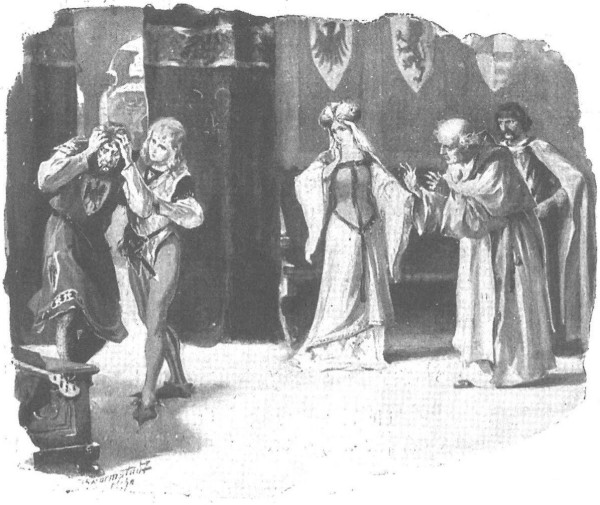

Thậm chí linh mục Wyszoniek còn sợ là sau khi tỉnh lại lần thứ hai, ông Jurand sẽ bị sốt cao và có thể hôn mê lâu. Cha hứa với quận chúa và Zbyszko sẽ báo ngay cho họ biết khi lão hiệp sĩ nói được, rồi sau khi họ rời chân, cha cũng đi nghỉ một lát. Mãi đến gần trưa ngày thứ hai của lễ giáng sinh, ông Jurand mới tỉnh, nhưng lần này tỉnh hẳn. Quận chúa và Zbyszko cùng có mặt khi ông tỉnh lại. Ông ngồi dậy trên giường, nhìn quận chúa, nhận ra bà, ông thốt lên:
- Muôn tâu lệnh bà nhân hậu… Tôi đang ở thành Ciechanow hay sao?
- Và ông bị mất cả lễ giáng sinh. - Quận chúa bảo.
- Tuyết vùi kín cả người tôi. Ai đã cứu tôi?
- Chính chàng hiệp sĩ này đây: Zbyszko trang Bogdaniec. Ông còn nhớ không, ở Kraków…
Hiệp sĩ Jurand giương con mắt lành còn lại nhìn chàng trai trẻ hồi lâu rồi nói:
- Tôi nhớ chứ… Thế Danusia đâu rồi?
- Cháu nó không đi cùng ông sao? - Quận chúa lo lắng hỏi.
- Sao nó lại đi với tôi được, khi mà tôi đang đến với nó đây thôi?
Zbyszko và quận chúa nhìn nhau, nghĩ rằng lời vừa thốt ra miệng ông Jurand là do cơn sốt nói ra, rồi quận chúa bảo:
- Lạy Chúa lòng lành, ông hãy tỉnh lại đi! Con bé không đi cùng với ông chứ?
- Con bé? Với tôi? - Ông Jurand kinh ngạc hỏi lại.
- Những người đi cùng ông đã chết hết cả, nhưng trong số đó không tìm thấy con bé. Tại sao ông để nó lại Spychow?
Hiệp sĩ hỏi lại lần nữa, nhưng lần này đã vang ngân nỗi sợ hãi trong giọng nói:
- Ở lại Spychow? Nó vẫn đang ở với lệnh bà đó chứ, muôn tâu lệnh bà nhân hậu, đâu phải ở với tôi!
- Chính ông đã phái người mang thư đến lâm cung đón nó rồi kia mà!
- Nhân danh Cha và Con! - Ông Jurand thốt lên. - Tôi không hề gửi ai đến đón cháu cả.
Quận chúa đột nhiên tái cả người.
- Sao lại thế được? - Bà thốt lên. - Ông có chắc là ông hoàn toàn tỉnh táo không đó?
- Lạy Chúa Trời nhân ái, con tôi đâu rồi? - Hiệp sĩ Jurand chồm người dậy, kêu lên.
Nghe những lời ấy, linh mục Wyszoniek vội vã bước ra khỏi phòng. Quận chúa nói tiếp:
- Ông nghe đây. Một đoàn tùy tùng vũ trang mang thư của ông đến lâm cung đón Danusia. Trong thư viết rằng ông bị một rầm nhà rơi vào người trong đám cháy… rằng ông sắp bị mù hẳn và muốn được nhìn mặt con… Bọn họ đã đón Danusia mang đi…
- Trời ơi! - Ông Jurand gào lên. - Thề có Chúa trên cao xanh, ở Spychow không hề có đám cháy nào, tôi cũng có phái ai đi đón con tôi đâu chứ!
Đúng lúc ấy linh mục Wyszoniek trở lại, mang theo bức thư, đưa cho ông Jurand và hỏi:
- Đây không phải là thư của cha linh mục của ông viết sao?
- Tôi không biết.
- Thế dấu ấn?
- Dấu ấn của tôi. Trong thư viết gì?
Linh mục Wyszoniek đọc lại bức thư, nghe xong ông Jurand đưa cả hai tay túm chặt lấy tóc, thốt lên:
- Thư giả… Con dấu giả! Đáng thương thay thân tôi! Chúng bắt mất con gái tôi rồi, chúng giết nó mất rồi!
-Ai?
- Lũ Thánh chiến!
- Lạy Chúa! Phải báo ngay cho quận công ta biết! Hãy để ngài phái ngay sứ giả đến gặp viên đại thống lĩnh! - Quận chúa kêu lên. - Lạy Chúa Giêsu lòng lành, xin Người hãy cứu giúp đứa trẻ!…
Vừa kêu lên những lời ấy, bà vừa chạy ra khỏi phòng. Hiệp sĩ Jurand nhảy phắt khỏi giường, nóng nảy khoác áo lên đôi vai khổng lồ của ông. Zbyszko ngồi nguyên như hóa đá, nhưng lát sau đôi hàm răng chàng bật ra những tiếng nghiến ken két dữ dội.

Ông Jurand đưa cả hai cánh tay túm chặt lấy tóc
- Sao ngài biết là bọn hiệp sĩ Thánh chiến bắt tiểu thư? - Linh mục Wyszoniek hỏi.
- Thề có những khổ hình của Chúa!
- Khoan đã!… Có thể lắm! Chính bọn chúng đã đến lâm cung kêu ca về ông… Chúng muốn trả thù ông đấy mà…
- Và bọn chúng đã bắt cóc nàng! - Zbyszko đột ngột kêu lên.
Nói đoạn chàng lao ngay ra khỏi phòng, chạy đến tàu ngựa ra lệnh đóng ngựa vào xe và thắng yên cương, mà chính chàng cũng không rõ để làm gì. Chàng chỉ biết một điều: cần phải đi cứu Danusia, cứu ngay, sang tận đất Phổ, giành lại nàng khỏi những bàn tay thù nghịch, hoặc chịu chết ở đấy.
Rồi chàng trở vào phòng để báo cho ông Jurand biết khí giới và ngựa xe sắp được chuẩn bị sẵn sàng. Trong lòng chàng sục sôi cơn giận, nỗi đau và sự tiếc hận, song đồng thời chàng vẫn chưa mất hy vọng, bởi chàng nghĩ rằng cùng với hiệp sĩ khủng khiếp trang Spychow, chàng có thể làm tất cả, có thể đánh thẳng vào cả thế lực của Giáo đoàn Thánh chiến kia.
Trong phòng, ngoài ông Jurand, cha Wyszoniek và quận chúa, chàng gặp cả quận công và hiệp sĩ de Lorche cùng vị hiệp sĩ cao tuổi xứ Dlugolas, người đã được quận công mời tới để dự bàn sau khi biết chuyện, vì ông là người thông tuệ và thấu hiểu ngọn ngành bọn hiệp sĩ Thánh chiến, bởi đã từng phải ngồi tù bên chúng suốt nhiều tháng năm dài.
- Cần phải hành động thật thận trọng, để khỏi sa vào nóng vội mà làm thiệt mạng cô gái. - Hiệp sĩ xứ Dlugolas nói. - Phải kêu kiện ngay với viên đại thống lĩnh, và nếu quận công giao thư gửi cho ông ta thì tôi xin lên đường.
- Ta sẽ giao thư để ông mang đi. - Quận công bảo. - Chúng ta không thể để con bé chết, cầu Chúa và thánh giá thiêng phù hộ! Đại thống lĩnh của chúng vẫn sợ phải đánh nhau với đức vua Ba Lan, ông ta muốn lấy lòng cả ta lẫn Semka [188] em ta. Chắc chúng bắt con bé không phải theo lệnh ông ta - ông ta sẽ bảo chúng nó thả ra thôi.
- Nhưng nếu đúng là theo lệnh ông ta thì sao? - Linh mục Wyszoniek hỏi.
- Dẫu là một hiệp sĩ Thánh chiến, nhưng ông ta vẫn là người trung thực hơn nhiều kẻ khác. - Quận công đáp. - Ta nói các ngươi biết rằng lúc này, ông ta muốn hòa hiếu với ta hơn là khiến ta nổi giận. Thế lực của Jagiełło không phải chuyện đùa. Hey! Chúng cứ việc xoa mỡ lên da chúng ta đến khi còn có thể làm chuyện đó, nhưng bây giờ chúng đã thấy rằng nếu cả dân Mazury chúng ta đây hiệp lực với vua Jagiełło thì chúng toi đời…
Nhưng vị hiệp sĩ xứ Dlugolas đã lên tiếng:
- Đúng thế. Bọn hiệp sĩ Thánh chiến không bao giờ làm việc vô ích. Vì vậy, tôi nghĩ rằng chúng bắt cóc Danusia chỉ là vì muốn ngài Jurand đây phải buông gươm, rồi chúng đòi tiền chuộc mạng, hoặc đánh đổi lấy người.
Nói đoạn, ông quay sang hỏi hiệp sĩ trang Spychow:
- Trong đám tù binh của ngài giờ có tên nào không?
- Có de Bergow. - Ông Jurand đáp.
- Hắn có giá không?
- Có vẻ là có giá lắm.
Nghe thấy tên de Bergow, hiệp sĩ de Lorche hỏi chuyện, và sau khi thông tỏ ngọn ngành, chàng bảo:
- Đó chính là kẻ có họ với bá tước vùng Geldria [189] , một thân chủ giàu thế lực của Giáo đoàn, thuộc một dòng họ từng có nhiều công tích với Giáo đoàn lắm.
- Đúng vậy. - Hiệp sĩ xứ Dlugolas thốt lên sau khi đã dịch cho những người có mặt nghe lời chàng. - Người thuộc họ de Bergow được giữ nhiều trọng trách trong Giáo đoàn.
- Chính hai gã Danveld và de Lӧwe cũng nằng nặc đòi cứu mạng hắn đấy thôi. - Quận công bảo. - Hễ mở mồm, chúng lại đòi phải trả tự do cho de Bergow. Thề có Chúa trên trời cao, chắc chắn chính bọn chúng đã bắt cóc con bé để đổi lấy de Bergow đó.
- Vậy thì chúng sẽ phải trả tự do cho con bé chứ. - Linh mục nói.
- Nhưng tốt nhất ta cũng nên biết hiện giờ tiểu thư đang ở đâu. - Vị hiệp sĩ xứ Dlugolas nói. - Bởi nếu đại thống lĩnh hỏi ta: phải ra lệnh cho kẻ nào để trả lại tự do cho tiểu thư, thì ta biết nói thế nào?
- Ở đâu à? - Hiệp sĩ Jurand thốt lên, giọng trầm đục. - Chắc hẳn chúng không dám giữ con bé ở vùng biên ải, sợ tôi đến cứu, chắc chúng phải đưa nó về một rẻo đất xa xôi hẻo lánh nào đó ngoài cửa sông Wisla hoặc đưa ra tận biển.
Zbyszko bật dậy:
- Ta nhất định sẽ tìm được và sẽ giải thoát cho Danusia!
Quận công đột ngột bùng ra cơn giận cố nén từ nãy:
- Lũ chó đẻ cướp con bé từ lâm cung của ta, chúng làm nhục cả ta nữa, ta sẽ không tha tội cho chúng đâu, không bao giờ! Quá đủ những trò phản bội của chúng rồi! Quá đủ những trận tấn công của chúng! Thà lấy lũ ma sói làm hàng xóm còn hơn! Lần này nhất định đại thống lĩnh phải ra tay trừng phạt lũ lãnh binh lộng hành kia, trả lại tự do cho con bé, phải cử sứ thần sang xin lỗi ta mới thôi. Nếu không - ta sẽ tuyên chiến! [190]
Nói đến đây, quận công đấm tay xuống bàn và thêm:
- Ô! Em ta từ Plock sẽ tham chiến với ta, cả đại quận công Witold và thế lực hùng mạnh của đức vua Jagiełło nữa! Đùa bỡn thế đủ rồi! Dẫu có là thánh hiền cũng phải hắt hơi! Ta chịu quá đủ rồi!
Mọi người đều im lặng, đợi cơn giận của quận công nguôi bớt. Quận chúa Anna Danuta vui sướng thấy quận công hết lòng vì chuyện xảy ra với Danusia, bởi bà biết rõ rằng tuy rất nhẫn, song ông cũng là người vô cùng kiên quyết, một khi đã quyết làm gì, ông không bao giờ bỏ dở trước khi đạt được điều đã định.
Tiếp đó, linh mục Wyszoniek lên tiếng.
- Trước kia, trong Giáo đoàn vốn có sự tuân phục, kỷ cương, - cha nói, - không một viên lãnh binh nào dám tự tiện hành động nếu chưa được phép của hội đồng thánh giáo và đại thống lĩnh. Cũng vì thế Đức Chúa mới giao vào tay chúng những đất nước lớn rộng nhường ấy, khiến chúng như vượt cao hẳn trên bất cứ thế lực trần gian nào khác. Nhưng bây giờ trong Giáo đoàn không còn có kỷ cương, không còn chân lý, không có lòng tin, không còn sự ngay thẳng. Không còn gì hết, chỉ có lòng tham lam và sự lật lọng, chúng như loài sói chứ không còn là giống người! Làm sao chúng vâng phục lời của đại thống lĩnh hay hội đồng thánh giáo, một khi cả lời răn của Chúa chúng cũng chẳng thèm nghe? Mỗi lãnh binh hoành hành như một vị quận công trong thành trì được giao giữ, thằng này lại giúp thằng kia làm điều ác. Ta có kêu kiện lên đại thống lĩnh thì chúng cũng chối phăng. Đại thống lĩnh có lệnh cho chúng trả lại tiểu thư, chúng cũng chẳng trả, hoặc chúng leo lẻo: “Không có cô gái ấy ở chỗ chúng tôi, chúng tôi có bắt cóc cô ấy bao giờ đâu!” Bắt chúng thề, chúng sẵn sàng thề ngay. Khi ấy chúng ta biết làm gì được?
- Làm gì ư? - Vị hiệp sĩ xứ Dlugolas thốt lên. - Ông Jurand hãy trở về trang Spychow. Nếu chúng bắt tiểu thư để lấy tiền chuộc hoặc để đánh đổi de Bergow, thế nào chúng cũng báo tin, và không báo cho ai khác ngoài ông Jurand.
- Bắt cóc tiểu thư không phải ai xa lạ, mà chính bọn hiệp sĩ đã đến lâm cung. - Linh mục nói.
- Vậy thì đại thống lĩnh sẽ đưa chúng ra tòa hoặc bắt chúng bồi thường đất cho ông Jurand.
- Đất ư? - Zbyszko thốt lên. - Đất thì cũng sẽ phải trả cho tôi trước, bởi thế nào tôi cũng thách chúng quyết đấu một phen!
Ông Jurand nhấc tay che mặt, hỏi:
- Những kẻ nào đã tới lâm cung?
- Danveld và lão già de Lӧwe, cùng hai đồng đạo khác là Gotfryd và Rotgier. - Linh mục đáp. - Bọn chúng kêu kiện, đòi quận công phải ra lệnh thả tự do cho de Bergow. Nhưng sau khi được hiệp sĩ de Fourcy cho hay rằng bọn Đức tấn công ngài trước, quận công đã mắng chúng một trận và gần như đuổi cổ chúng mà chẳng ban cho thứ gì.
- Ngươi hãy trở về trang Spychow đi, - quận công truyền, - bọn chúng sẽ nhắn tin đến đấy. Cho đến nay chúng chưa làm việc này, vì gã Danveld bị hộ vệ của chàng hiệp sĩ trẻ tuổi này bẻ gãy tay khi anh ta mang tới cho chúng lời thách đấu. Ngươi hãy trở về trang Spychow, khi nào bọn chúng đưa tin đến, hãy báo cho ta hay. Bọn chúng sẽ trả con bé cho ngươi đánh đổi lấy de Bergow, nhưng ta sẽ không thôi chuyện trả thù, bởi khi cướp con ta từ lâm cung của ta, chúng đã nhục mạ ta rồi.
Nói đến đây cơn giận của quận công lại trỗi dậy, vì quả thực bọn hiệp sĩ Thánh chiến đã khiến ngài mất hết nhẫn nại. Lát sau ngài nói thêm:
- Hey! Chúng cứ thổi, thổi mãi vào lửa, thể nào rốt cuộc chúng cũng sẽ bị cháy mất mõm cho coi!
- Chúng sẽ chối! - Linh mục Wyszoniek nhắc lại.
- Một khi chúng báo cho ngài Jurand biết là đứa trẻ đang ở trong tay chúng, chúng sẽ không thể chối cãi được đâu. - Hiệp sĩ Mikołaj xứ Dlugolas trả lời, giọng đã hơi sốt ruột - Tôi tin rằng chúng không giữ tiểu thư ở vùng biên giới, mà đúng như ngài Jurand đã nói, chúng sẽ mang tiểu thư tới những thành trì ở xa hoặc ra vùng biển hẻo lánh. Nhưng một khi đã có bằng chứng là chính chúng hành sự, chúng không thể chối cãi trước viên đại thống lĩnh được đâu.
Ông Jurand chợt cất giọng lạ lùng và kinh khủng, nhắc lại tên những gã hiệp sĩ Thánh chiến kia:
- Danveld, de Lӧwe, Gotfryd, Rotgier.
Hiệp sĩ Mikołaj xứ Dlugolas khuyên nên phái thêm những thuộc hạ thông thuộc, nhanh trí sang đất Phổ để dò xem ở thành Szczytno và Insbork có giam tiểu thư Jurandówna không, nếu không thì nàng được đưa đi đâu. Rồi quận công cầm lấy quyền trượng bước ra ngoài để ban các mệnh lệnh cần thiết, còn quận chúa quay lại, muốn dùng đôi lời tốt đẹp để cổ vũ ông Jurand.
- Ông thấy người ra sao? - Bà hỏi.
Nhưng suốt giây lâu ông chẳng trả lời, dường như không nghĩ đến câu hỏi, rồi đột nhiên ông thốt lên:
- Như thể có kẻ nào đâm sâu vào vết thương cũ của tôi vậy.
- Nhưng ông cứ vững tin vào sự nhân từ của Chúa. Danusia rồi nhất định sẽ trở về, sau khi ông trả gã de Bergow cho chúng.
- Tôi không tiếc cả máu mình với chúng.
Quận chúa ngần ngừ không hiểu có nên nói ngay cho ông biết về chuyện lễ cưới không, nhưng sau khi cân nhắc, không muốn tiếp thêm một nỗi phiền muộn mới vào những bất hạnh đã quá nặng nề của ông Jurand, bà không nói. Hơn nữa, đột nhiên bà chợt cảm thấy một nỗi lo sợ mơ hồ nào đó. “Ông ấy sẽ cùng Zbyszko đi tìm con bé, thôi cứ để Zbyszko kiếm dịp nào đó thích hợp rồi nói với ông ấy sau.” Bà tự nhủ. “Nếu nói bây giờ thì đầu óc ông ấy đến rối tung lên mất” Thế là bà nói sang chuyện khác.
- Ông cũng đừng nên trách chúng ta. - Bà bảo. - Bọn người ấy mặc sắc phục gia nhân của ông, mang thư có dấu ấn của ông nói rằng ông đang bị ốm, mắt dần dần mờ đi, muốn nhìn mặt con gái lần cuối. Làm sao chúng ta có thể chống lại, không thực hiện nguyện vọng ấy của người cha cho được?
Hiệp sĩ Jurand quỳ xuống ôm chân quận chúa.
- Tôi chẳng hờn trách ai cả, thưa lệnh bà thánh thiện.
- Ông nên luôn nhớ rằng Chúa sẽ trả con gái về cho ông, bởi mắt Người luôn dõi theo trông nom nó. Người sẽ gửi xuống cho Danusia niềm cứu rỗi, giống như trong cuộc săn vừa rồi khi con bò tót hung hãn lao thẳng vào chúng ta, Chúa Giêsu đã sai Zbyszko xông vào bảo vệ mọi người. Y suýt mất mạng, phải nằm liệt giường khá lâu, nhưng đã cứu sống được cả ta lẫn Danusia, vì thế y được quận công ban cho đai và cựa vàng hiệp sĩ. Ông thấy đấy!… Bàn tay của Chúa luôn chở che cho con trẻ! Dĩ nhiên, thương con ai chẳng xót xa. Ta cứ tưởng nó sẽ đến đây cùng ông, ta sẽ được gặp mặt nó, đứa con nuôi thương yêu nhất của ta, ai ngờ…
Giọng bà run run, lệ tuôn giàn giụa từ mắt bà, niềm tuyệt vọng kìm nén từ bấy đến giờ trong lòng ông Jurand chợt tràn dâng trong một thoáng, đột ngột và kinh hoàng như gió lốc. Đưa cả hai tay túm chặt lấy mớ tóc xõa dài của mình, ông đập đầu thình thình vào xà nhà, vừa rên rỉ vừa bật ra những lời nghẹn ngào trầm đục:
- Chúa ơi! Chúa ơi! Chúa ơi!…
Nhưng đúng lúc ấy Zbyszko đã nhảy phắt đến bên ông, lấy hết sức lắc lắc người ông, thốt lên:
- Ta hãy lên đường! Trở về ngay Spychow!…